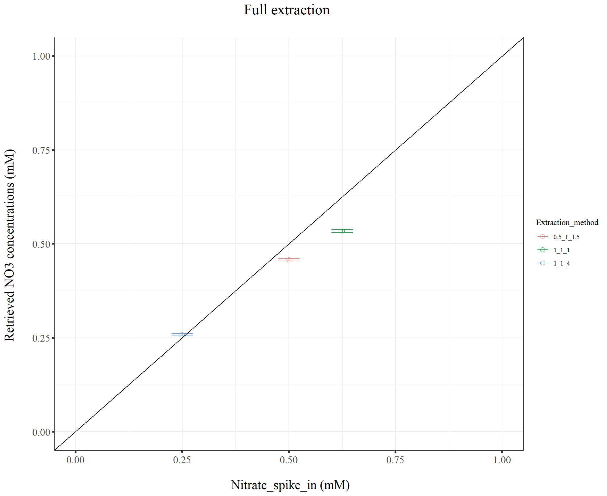

Last updated: 2022-06-08
Checks: 7 0
Knit directory: Denit_visualization_R/
This reproducible R Markdown analysis was created with workflowr (version 1.6.2). The Checks tab describes the reproducibility checks that were applied when the results were created. The Past versions tab lists the development history.
Great! Since the R Markdown file has been committed to the Git repository, you know the exact version of the code that produced these results.
Great job! The global environment was empty. Objects defined in the global environment can affect the analysis in your R Markdown file in unknown ways. For reproduciblity it’s best to always run the code in an empty environment.
The command set.seed(20210924) was run prior to running the code in the R Markdown file. Setting a seed ensures that any results that rely on randomness, e.g. subsampling or permutations, are reproducible.
Great job! Recording the operating system, R version, and package versions is critical for reproducibility.
Nice! There were no cached chunks for this analysis, so you can be confident that you successfully produced the results during this run.
Great job! Using relative paths to the files within your workflowr project makes it easier to run your code on other machines.
Great! You are using Git for version control. Tracking code development and connecting the code version to the results is critical for reproducibility.
The results in this page were generated with repository version 7905c93. See the Past versions tab to see a history of the changes made to the R Markdown and HTML files.
Note that you need to be careful to ensure that all relevant files for the analysis have been committed to Git prior to generating the results (you can use wflow_publish or wflow_git_commit). workflowr only checks the R Markdown file, but you know if there are other scripts or data files that it depends on. Below is the status of the Git repository when the results were generated:
Ignored files:
Ignored: .Rhistory
Ignored: .Rproj.user/
Untracked files:
Untracked: 220421_Griess_antibiotics_experiment_to_kyle_remove_blanks.xlsx
Untracked: 220421_Griess_antibiotics_experiment_to_kyle_remove_blanks_add_pH.xlsx
Untracked: 220421_Griess_antibiotics_experiment_to_kyle_w_autoclaved.xlsx
Untracked: 220422_pH_Antibiotics_Sterile_experiment.xlsx
Untracked: 220519_Griess_antibiotics_experiment_to_kyle_w_autoclaved.xlsx
Untracked: 220521_pH_Antibiotics_dose_effect_experiment.xlsx
Untracked: data/120321_soil_buffering_capacity_Nichols-B.xlsx
Untracked: data/210911_TOC_sample_plate1.xlsx
Untracked: data/210922_Griess_sample_plate1-investigating.xlsx
Untracked: data/210922_Griess_sample_plate1.xlsx
Untracked: data/210927_TOC_sample_plate1_100ul.xlsx
Untracked: data/210927_TOC_sample_plate1_10ul.xlsx
Untracked: data/210928_Griess_sample_plate1.xlsx
Untracked: data/211005_Griess_sample_plate1.xlsx
Untracked: data/211007_Griess_blank_plate1.xlsx
Untracked: data/211007_Griess_blank_plate2.xlsx
Untracked: data/211008_Griess_blank_plate0.xlsx
Untracked: data/211008_Griess_blank_plate1.xlsx
Untracked: data/211017_Griess_plate0.xlsx
Untracked: data/211017_Griess_plate1.xlsx
Untracked: data/211017_Griess_plate2.xlsx
Untracked: data/211017_Griess_plate3.xlsx
Untracked: data/211017_Griess_plate4.xlsx
Untracked: data/211017_Griess_plate5.xlsx
Untracked: data/211017_Griess_plate6.xlsx
Untracked: data/211017_Griess_plate7.xlsx
Untracked: data/211017_Griess_plate8.xlsx
Untracked: data/211019_Griess_plate1.xlsx
Untracked: data/211020_Griess_plate0.xlsx
Untracked: data/211020_Griess_plate1.xlsx
Untracked: data/211020_df_full_innate.xlsx
Untracked: data/211025_Griess_no3_fit_plate0.xlsx
Untracked: data/211025_Griess_no3_fit_plate1.xlsx
Untracked: data/211025_Griess_plate0.xlsx
Untracked: data/211025_Griess_plate1.xlsx
Untracked: data/211028_Griess_plate1.xlsx
Untracked: data/211028_Griess_plate1_no3_fit.xlsx
Untracked: data/211028_Griess_plate2.xlsx
Untracked: data/211028_Griess_plate2_no3_fit.xlsx
Untracked: data/211028_Griess_plate3.xlsx
Untracked: data/211028_Griess_plate3_no3_fit.xlsx
Untracked: data/211028_Griess_plate4.xlsx
Untracked: data/211028_Griess_plate4_no3_fit.xlsx
Untracked: data/211028_time_table.xlsx
Untracked: data/211127_Griess_SUP1.xlsx
Untracked: data/211127_Griess_SUP11.xlsx
Untracked: data/211127_Griess_SUP3.xlsx
Untracked: data/211127_Griess_SUP5.xlsx
Untracked: data/211127_Griess_SUP7.xlsx
Untracked: data/211127_Griess_SUP9.xlsx
Untracked: data/211127_Griess_plate0.xlsx
Untracked: data/211127_time_table.xlsx
Untracked: data/211128_Ammonia_sample_plate10.xlsx
Untracked: data/211128_Ammonia_sample_plate11.xlsx
Untracked: data/211128_Griess_plate1.xlsx
Untracked: data/211128_Griess_plate10.xlsx
Untracked: data/211128_Griess_plate11.xlsx
Untracked: data/211128_Griess_plate2.xlsx
Untracked: data/211128_Griess_plate3.xlsx
Untracked: data/211128_Griess_plate4.xlsx
Untracked: data/211128_Griess_plate5.xlsx
Untracked: data/211128_Griess_plate6.xlsx
Untracked: data/211128_Griess_plate7.xlsx
Untracked: data/211128_Griess_plate8.xlsx
Untracked: data/211128_Griess_plate9.xlsx
Untracked: data/211128_time_table.xlsx
Untracked: data/211201_pH_colorimetric.xlsx
Untracked: data/211203_slurry_vs_water_drying_table.xlsx
Untracked: data/211203_slurry_vs_water_drying_time.xlsx
Untracked: data/211208_pH_colorimetric_T3.xlsx
Untracked: data/211208_pH_colorimetric_T4.xlsx
Untracked: data/211208_pH_colorimetric_T5.xlsx
Untracked: data/211208_pH_colorimetric_plate1.xlsx
Untracked: data/211208_pH_colorimetric_plate2.xlsx
Untracked: data/211208_pH_colorimetric_plate3.xlsx
Untracked: data/211208_time_table.xlsx
Untracked: data/211209_OD600_T1.xlsx
Untracked: data/211209_OD600_T2.xlsx
Untracked: data/211209_OD600_T3.xlsx
Untracked: data/211209_time_table.xlsx
Untracked: data/211210_pH_colorimetric_T0.xlsx
Untracked: data/211210_pH_colorimetric_T1.xlsx
Untracked: data/211210_pH_colorimetric_T2.xlsx
Untracked: data/211210_pH_colorimetric_T3.xlsx
Untracked: data/211210_time_table.xlsx
Untracked: data/211218_pH_colorimetric_t0.xlsx
Untracked: data/211218_pH_colorimetric_t1.xlsx
Untracked: data/211218_pH_colorimetric_t2.xlsx
Untracked: data/211218_pH_colorimetric_t3.xlsx
Untracked: data/211218_pH_colorimetric_t4.xlsx
Untracked: data/211218_time_table.xlsx
Untracked: data/211220_Griess_plate1.xlsx
Untracked: data/211220_Griess_plate10.xlsx
Untracked: data/211220_Griess_plate11.xlsx
Untracked: data/211220_Griess_plate2.xlsx
Untracked: data/211220_Griess_plate3.xlsx
Untracked: data/211220_Griess_plate4.xlsx
Untracked: data/211220_Griess_plate5.xlsx
Untracked: data/211220_Griess_plate6.xlsx
Untracked: data/211220_Griess_plate7.xlsx
Untracked: data/211220_Griess_plate8.xlsx
Untracked: data/211220_Griess_plate9.xlsx
Untracked: data/211220_time_table_AU.xlsx
Untracked: data/211220_time_table_BN.xlsx
Untracked: data/211224_TOC_sample_plate1.xlsx
Untracked: data/220103_Griess_T0.xlsx
Untracked: data/220103_Griess_T1.xlsx
Untracked: data/220103_Griess_T11.xlsx
Untracked: data/220103_Griess_T12.xlsx
Untracked: data/220103_Griess_T2.xlsx
Untracked: data/220103_Griess_T3.xlsx
Untracked: data/220103_Griess_T4.xlsx
Untracked: data/220103_Griess_T5.xlsx
Untracked: data/220103_Griess_T6.xlsx
Untracked: data/220103_Griess_T7.xlsx
Untracked: data/220103_Griess_T8.xlsx
Untracked: data/220103_Griess_T9.xlsx
Untracked: data/220103_time_table.xlsx
Untracked: data/220106_Ammonia_sample_plate1.xlsx
Untracked: data/220107-2_Ammonia_sample_plate1.xlsx
Untracked: data/220107-3_Ammonia_sample_plate1.xlsx
Untracked: data/220107-4_Ammonia_sample_plate1.xlsx
Untracked: data/220107-5_Ammonia_sample_plate1.xlsx
Untracked: data/220107-6_Ammonia_sample_plate1.xlsx
Untracked: data/220107-7_Ammonia_sample_plate1.xlsx
Untracked: data/220107-8_Ammonia_sample_plate1.xlsx
Untracked: data/220107-9_Ammonia_sample_plate1.xlsx
Untracked: data/220107_Ammonia_sample_plate1.xlsx
Untracked: data/220108_Ammonia_sample_plate1.xlsx
Untracked: data/220110_Ammonia_sample_plate1.xlsx
Untracked: data/220110_Ammonia_sample_plate2.xlsx
Untracked: data/220111_Ammonia_sample_T0.xlsx
Untracked: data/220111_Ammonia_sample_T1.xlsx
Untracked: data/220111_Ammonia_sample_T2.xlsx
Untracked: data/220111_Ammonia_sample_T3.xlsx
Untracked: data/220111_TOC_sample_plate1.xlsx
Untracked: data/220112_Ammonia_sample_T11.xlsx
Untracked: data/220112_Ammonia_sample_T12.xlsx
Untracked: data/220112_Ammonia_sample_T4.xlsx
Untracked: data/220112_Ammonia_sample_T5.xlsx
Untracked: data/220112_Ammonia_sample_T6.xlsx
Untracked: data/220112_Ammonia_sample_T7.xlsx
Untracked: data/220112_Ammonia_sample_T8.xlsx
Untracked: data/220112_Ammonia_sample_T9.xlsx
Untracked: data/220113_pH_colorimetric_T0.xlsx
Untracked: data/220113_pH_colorimetric_T12.xlsx
Untracked: data/220113_pH_colorimetric_T2.xlsx
Untracked: data/220113_pH_colorimetric_T3.xlsx
Untracked: data/220113_pH_colorimetric_T8.xlsx
Untracked: data/220125_pH_colorimetric_pH1_mu_opt0.099.xlsx
Untracked: data/220125_pH_colorimetric_pH1_using6.66.xlsx
Untracked: data/220125_pH_colorimetric_pH2_mu_opt0.099.xlsx
Untracked: data/220125_pH_colorimetric_pH2_using6.66.xlsx
Untracked: data/220125_time_table.xlsx
Untracked: data/220128_Ammonia_sample_plate1.xlsx
Untracked: data/220128_Ammonia_sample_plate2.xlsx
Untracked: data/220128_Ammonia_sample_plate3.xlsx
Untracked: data/220128_Ammonia_sample_plate4.xlsx
Untracked: data/220128_Ammonia_sample_plate5.xlsx
Untracked: data/220128_Ammonia_sample_plate6.xlsx
Untracked: data/220128_Griess_plate1.xlsx
Untracked: data/220128_Griess_plate2.xlsx
Untracked: data/220128_Griess_plate3.xlsx
Untracked: data/220128_Griess_plate4.xlsx
Untracked: data/220128_Griess_plate5.xlsx
Untracked: data/220128_Griess_plate6.xlsx
Untracked: data/220128_time_table.xlsx
Untracked: data/220131_Ammonia_sample_plate1.xlsx
Untracked: data/220131_Ammonia_sample_plate2.xlsx
Untracked: data/220131_Ammonia_sample_plate3.xlsx
Untracked: data/220131_Ammonia_sample_plate4.xlsx
Untracked: data/220131_Ammonia_sample_plate5.xlsx
Untracked: data/220131_Ammonia_sample_plate6.xlsx
Untracked: data/220131_Griess_plate1.xlsx
Untracked: data/220131_Griess_plate2.xlsx
Untracked: data/220131_Griess_plate3.xlsx
Untracked: data/220131_Griess_plate4.xlsx
Untracked: data/220131_Griess_plate5.xlsx
Untracked: data/220131_Griess_plate6.xlsx
Untracked: data/220131_pH_colorimetric_pH1_mu_opt_T0.xlsx
Untracked: data/220131_pH_colorimetric_pH2_mu_opt_T0.xlsx
Untracked: data/220131_time_table.xlsx
Untracked: data/220327_Griess_pastplate9.xlsx
Untracked: data/220327_Griess_plate1.xlsx
Untracked: data/220327_Griess_plate10.xlsx
Untracked: data/220327_Griess_plate11.xlsx
Untracked: data/220327_Griess_plate12.xlsx
Untracked: data/220327_Griess_plate13.xlsx
Untracked: data/220327_Griess_plate14.xlsx
Untracked: data/220327_Griess_plate15.xlsx
Untracked: data/220327_Griess_plate16.xlsx
Untracked: data/220327_Griess_plate2.xlsx
Untracked: data/220327_Griess_plate3.xlsx
Untracked: data/220327_Griess_plate4.xlsx
Untracked: data/220327_Griess_plate5.xlsx
Untracked: data/220327_Griess_plate6.xlsx
Untracked: data/220327_Griess_plate7.xlsx
Untracked: data/220327_Griess_plate8.xlsx
Untracked: data/220327_Griess_plate9.xlsx
Untracked: data/220327_time_table.xlsx
Untracked: data/220329_pH_colorimetric_pH1_mu_opt_T0.xlsx
Untracked: data/220329_pH_colorimetric_pH2_mu_opt_T0.xlsx
Untracked: data/220329_pH_colorimetric_pH3_mu_opt_T0.xlsx
Untracked: data/220329_pH_colorimetric_pH4_mu_opt_T0.xlsx
Untracked: data/220329_pH_colorimetric_pH6_mu_opt_T0.xlsx
Untracked: data/220329_pH_colorimetric_pH7_mu_opt_T0.xlsx
Untracked: data/220407_pH_colorimetric_pH3_half_mu_opt_T0.xlsx
Untracked: data/220407_pH_colorimetric_pH_base_treatment_mu_opt_T0.xlsx
Untracked: data/220407_pH_colorimetric_pH_standard_150ul_mu_opt_T0.xlsx
Untracked: data/220407_pH_colorimetric_pH_standard_300ul_mu_opt_T0.xlsx
Untracked: data/220407_pH_colorimetric_pH_standard_60ul_mu_opt_T0.xlsx
Untracked: data/220408_pH_colorimetric_pH_limit_mu_opt_water.xlsx
Untracked: data/220412_pH_colorimetric_pH_half_mu_opt_WW.xlsx
Untracked: data/220414_Ammonia_sample_plate0.xlsx
Untracked: data/220418_Ammonia_sample_plate0.xlsx
Untracked: data/220419_Ammonia_sample_plate0.xlsx
Untracked: data/220420-2_Ammonia_bcf.xlsx
Untracked: data/220420_Ammonia_sample_plate1.xlsx
Untracked: data/220420_Ammonia_sample_plate10.xlsx
Untracked: data/220420_Ammonia_sample_plate11.xlsx
Untracked: data/220420_Ammonia_sample_plate12.xlsx
Untracked: data/220420_Ammonia_sample_plate13.xlsx
Untracked: data/220420_Ammonia_sample_plate14.xlsx
Untracked: data/220420_Ammonia_sample_plate15.xlsx
Untracked: data/220420_Ammonia_sample_plate16.xlsx
Untracked: data/220420_Ammonia_sample_plate2.xlsx
Untracked: data/220420_Ammonia_sample_plate3.xlsx
Untracked: data/220420_Ammonia_sample_plate4.xlsx
Untracked: data/220420_Ammonia_sample_plate5.xlsx
Untracked: data/220420_Ammonia_sample_plate6.xlsx
Untracked: data/220420_Ammonia_sample_plate7.xlsx
Untracked: data/220420_Ammonia_sample_plate8.xlsx
Untracked: data/220420_Ammonia_sample_plate9.xlsx
Untracked: data/220421_Ammonia_df_a_bcf.xlsx
Untracked: data/220421_Ammonia_df_pH_range.xlsx
Untracked: data/220421_Ammonia_sample_plate1.xlsx
Untracked: data/220421_Ammonia_sample_plate10.xlsx
Untracked: data/220421_Ammonia_sample_plate11.xlsx
Untracked: data/220421_Ammonia_sample_plate2.xlsx
Untracked: data/220421_Ammonia_sample_plate3.xlsx
Untracked: data/220421_Ammonia_sample_plate4.xlsx
Untracked: data/220421_Ammonia_sample_plate5.xlsx
Untracked: data/220421_Ammonia_sample_plate6.xlsx
Untracked: data/220421_Ammonia_sample_plate7.xlsx
Untracked: data/220421_Ammonia_sample_plate8.xlsx
Untracked: data/220421_Ammonia_sample_plate9.xlsx
Untracked: data/220421_Ammonia_sterile.xlsx
Untracked: data/220421_Griess_antibiotics_experiment_to_kyle_remove_blanks.xlsx
Untracked: data/220421_Griess_antibiotics_experiment_to_kyle_remove_blanks_add_pH.xlsx
Untracked: data/220421_Griess_plate1.xlsx
Untracked: data/220421_Griess_plate10.xlsx
Untracked: data/220421_Griess_plate11.xlsx
Untracked: data/220421_Griess_plate2.xlsx
Untracked: data/220421_Griess_plate3.xlsx
Untracked: data/220421_Griess_plate4.xlsx
Untracked: data/220421_Griess_plate5.xlsx
Untracked: data/220421_Griess_plate6.xlsx
Untracked: data/220421_Griess_plate7.xlsx
Untracked: data/220421_Griess_plate8.xlsx
Untracked: data/220421_Griess_plate9.xlsx
Untracked: data/220421_nitrate_reduced_autoclaved_samples.xlsx
Untracked: data/220421_time_table.xlsx
Untracked: data/220422_pH_Antibiotics_Sterile_experiment.xlsx
Untracked: data/220422_pH_colorimetric_LBA_Sterile_T0_mu_opt_T0.xlsx
Untracked: data/220422_pH_colorimetric_LBA_Sterile_T4_mu_opt_T0.xlsx
Untracked: data/220422_pH_colorimetric_LBA_Sterile_T4_mu_opt_T4.xlsx
Untracked: data/220422_pH_colorimetric_LBA_Sterile_T7_mu_opt_T0.xlsx
Untracked: data/220422_pH_colorimetric_LBA_Sterile_T7_mu_opt_T7.xlsx
Untracked: data/220422_pH_colorimetric_LBA_Sterile_T9_mu_opt_T0.xlsx
Untracked: data/220422_pH_colorimetric_LBA_Sterile_T9_mu_opt_T9.xlsx
Untracked: data/220508_TOC_sample_plate1.xlsx
Untracked: data/220513_TOC_sample_plate1.xlsx
Untracked: data/220513_TOC_sample_plate2.xlsx
Untracked: data/220513_TOC_sample_plate3.xlsx
Untracked: data/220517_time_table.xlsx
Untracked: data/220519_Griess_antibiotics_dose_experiment_remove_blanks.xlsx
Untracked: data/220519_Griess_crerar7_extreme.xlsx
Untracked: data/220519_Griess_plate1.xlsx
Untracked: data/220519_Griess_plate10.xlsx
Untracked: data/220519_Griess_plate11.xlsx
Untracked: data/220519_Griess_plate2.xlsx
Untracked: data/220519_Griess_plate3.xlsx
Untracked: data/220519_Griess_plate4.xlsx
Untracked: data/220519_Griess_plate5.xlsx
Untracked: data/220519_Griess_plate6.xlsx
Untracked: data/220519_Griess_plate7.xlsx
Untracked: data/220519_Griess_plate8.xlsx
Untracked: data/220519_Griess_plate9.xlsx
Untracked: data/220519_time_table.xlsx
Untracked: data/220520_TOC_sample_plate1.xlsx
Untracked: data/220520_TOC_sample_plate2.xlsx
Untracked: data/220520_TOC_sample_plate3.xlsx
Untracked: data/220521_pH_Antibiotics_dose_effect_experiment.xlsx
Untracked: data/220521_pH_colorimetric_Barneveld2_Sterile_T0_mu_opt_T0.xlsx
Untracked: data/220521_pH_colorimetric_Barneveld2_Sterile_T10_mu_opt_T0.xlsx
Untracked: data/220521_pH_colorimetric_Barneveld2_Sterile_T7_mu_opt_T0.xlsx
Untracked: data/220526_TOC_sample_plate1.xlsx
Untracked: data/220527_TOC_sample_plate1.xlsx
Untracked: data/220601_TOC_sample_plate1.xlsx
Untracked: data/220602-2_TOC_sample_plate1.xlsx
Untracked: data/220602-2_control_OD600.xlsx
Untracked: data/220602-3_TOC_sample_plate1.xlsx
Untracked: data/220602-3_control_OD600.xlsx
Untracked: data/220602_TOC_sample_plate1.xlsx
Untracked: data/220603_100ul_OD600.xlsx
Untracked: data/220603_TOC_sample_plate1.xlsx
Untracked: data/220603_TOC_sample_plate2.xlsx
Untracked: data/220606_TOC_sample_plate1.xlsx
Untracked: data/220606_TOC_sample_plate2.xlsx
Untracked: data/ForKiseok_from_Dr_Cuhel.xlsx
Untracked: data/ForKiseok_from_Dr_Cuhel_format_edited.xlsx
Untracked: data/OD434_OD585_C_WB_T5_220329.xlsx
Untracked: data/OD434_OD585_WW_C_T0_220329.xlsx
Untracked: data/OD434_OD585_pH3_half_area_220407.xlsx
Untracked: data/OD434_OD585_pH_base_treated_T0_220407.xlsx
Untracked: data/OD434_OD585_pH_half_150ul_220412.xlsx
Untracked: data/SPNa_86437_021122_edit.xlsx
Untracked: data/SPNa_86437_021122_edit2.xlsx
Untracked: data/TOC_TN_measurement_2_labs_211014.xlsx
Untracked: data/dry_weight_curve(9.5.21).xlsx
Untracked: data/pH_data(11.17.21)-Midway_etc.xlsx
Untracked: data/pH_data(12.6.21)-Midway_incubation_endpoint.xlsx
Untracked: data/pH_data(9.14.21).xlsx
Untracked: data/pH_data(9.28.21).xlsx
Untracked: data/pH_standard_150ul_220407.xlsx
Untracked: data/pH_standard_300ul_220407.xlsx
Untracked: data/pH_standard_60ul_220407.xlsx
Untracked: data/~$220513_TOC_sample_plate1.xlsx
Untracked: data/~$SPNa_86437_021122_edit.xlsx
Untracked: past_figures/
Note that any generated files, e.g. HTML, png, CSS, etc., are not included in this status report because it is ok for generated content to have uncommitted changes.
These are the previous versions of the repository in which changes were made to the R Markdown (analysis/211019_Griess_extraction_trouble_shooting.Rmd) and HTML (docs/211019_Griess_extraction_trouble_shooting.html) files. If you’ve configured a remote Git repository (see ?wflow_git_remote), click on the hyperlinks in the table below to view the files as they were in that past version.
| File | Version | Author | Date | Message |
|---|---|---|---|---|
| html | b7a27fc | KiseokUchicago | 2021-11-17 | Build site. |
| html | a07efe3 | KiseokUchicago | 2021-11-05 | Build site. |
| html | 3032cf3 | KiseokUchicago | 2021-10-21 | Build site. |
| html | 9275f67 | KiseokUchicago | 2021-10-21 | Build site. |
| Rmd | a2e06a9 | KiseokUchicago | 2021-10-21 | all |
Researcher: Kiseok Lee
Experiment Date: 10/19/21
Analysis Date: 10/19/21 Lab: Seppe Kuehn
# libraries
library(dplyr)
library(ggplot2)
library(RColorBrewer)
library(vegan)
library(tidyverse)
library(magrittr)
library(readxl)
library(reshape2)
library(gtools)
library(devtools)
library(openxlsx)
library(ape)
library(stringr)
library(tidyr)
library(ggrepel)
library(ggpubr)
## theme for ggplot
mytheme <- theme_bw() +
theme(text = element_text(family="serif")) +
theme(plot.title = element_text(size = 19,hjust = 0.5, family="serif")) +
theme(axis.title.x = element_text(size = 17,hjust = 0.5, family="serif")) +
theme(axis.title.y = element_text(size = 17,hjust = 0.5, family="serif")) +
theme(axis.text.x = element_text(hjust = 0.5, vjust=0.3,size=13, family="serif"))+
theme(axis.text.y = element_text(size=10, family="serif"))+
theme(panel.grid.major = element_blank()) +
theme(panel.grid.minor = element_blank(),panel.background=element_blank(),panel.border=element_blank(),plot.background=element_blank()) +
theme(axis.ticks = element_line(size = 1.1))
mytheme_2d <- theme_bw() +
theme(text = element_text(family="serif")) +
theme(plot.title = element_text(size = 19,hjust = 0.5, family="serif")) +
theme(axis.title.x = element_text(size = 17,hjust = 0.5, family="serif")) +
theme(axis.title.y = element_text(size = 17,hjust = 0.5, family="serif")) +
theme(axis.text.x = element_text(hjust = 0.5, vjust=0.3,size=13, family="serif"))+
theme(axis.text.y = element_text(size=13, family="serif"))+
# theme(panel.grid.major = element_blank()) +
# theme(panel.grid.minor = element_blank(),panel.background=element_blank(),plot.background=element_blank()) +
theme(axis.ticks = element_line(size = 1.1))
# color collection
my_color_collection <- c(
"#CBD588", "#5F7FC7", "orange", "#AD6F3B", "#673770",
"#D14285", "#652926", "#C84248", "#8569D5", "#5E738F",
"#D1A33D", "#8A7C64", "#599861","#616163", "#FFCDB2",
"#6D9F71", "#242F40",
"#CCA43B", "#F92A82", "#ED7B84", "#7EB77F",
"#DEC4A1", "#E5D1D0", '#0E8482', '#C9DAEA', '#337357',
'#95C623', '#E55812', '#04471C', '#F2D7EE', '#D3BCC0',
'#A5668B', '#69306D', '#0E103D', '#1A535C', '#4ECDC4',
'#F7FFF7', '#FF6B6B', '#FFE66D', '#6699CC', '#FFF275',
'#FF8C42', '#FF3C38', '#A23E48', '#000000', '#CF5C36',
'#EEE5E9', '#7C7C7C', '#EFC88B', '#2E5266', '#6E8898',
'#9FB1BC', '#D3D0CB', '#E2C044', '#5BC0EB', '#FDE74C',
'#9BC53D', '#E55934', '#FA7921', "#CD9BCD", "#508578", "#DA5724")
# for git push, use this instead of using wflow_git_push()
# git push -u origin master (in the Git app / in the working directory)# import file
df_p1 <- openxlsx::read.xlsx("data/211019_Griess_plate1.xlsx")
head(df_p1) X1 Sample Extraction_method Extraction_ul
1 A01 Fast_Spike_2mM_100ul_0.5_1_1.5 0.5_1_1.5 100
2 A02 Fast_Spike_2mM_100ul_0.5_1_1.5 0.5_1_1.5 100
3 A03 After_30min_Spike_2mM_100ul_0.5_1_1.5 0.5_1_1.5 100
4 A05 Shake_30min_Spike_2mM_100ul_0.5_1_1.5 0.5_1_1.5 100
5 A07 Full_Spike_0.625mM_2000ul_1_1_1 1_1_1 2000
6 A08 Full_Spike_0.5mM_2500ul_0.5_1_1.5 0.5_1_1.5 2500
Nitrate_input Sample_type Trouble_shooting Plate NO2_OD540 NO2NO3_OD540
1 2.000 Spike Fast P1 0.00680 2.17210
2 2.000 Spike Fast P1 0.00590 1.99660
3 2.000 Spike After_30min P1 0.01105 2.27140
4 2.000 Spike Shake_30min P1 0.00660 2.27915
5 0.625 Spike Full P1 0.00455 1.40745
6 0.500 Spike Full P1 0.00250 0.89140
NO2_mM NO2NO3_mM NO3_mM
1 0.011421025 2.1422874 2.1308664
2 0.011039728 1.9408399 1.9298002
3 0.013222025 2.2594353 2.2462132
4 0.011336289 2.2686801 2.2573438
5 0.010467843 1.3092250 1.2987572
6 0.009599564 0.8017801 0.7921805colnames(df_p1) [1] "X1" "Sample" "Extraction_method"
[4] "Extraction_ul" "Nitrate_input" "Sample_type"
[7] "Trouble_shooting" "Plate" "NO2_OD540"
[10] "NO2NO3_OD540" "NO2_mM" "NO2NO3_mM"
[13] "NO3_mM" df_p1 %<>% rename(Well = X1)
dim(df_p1)[1] 64 13# remove wells
df_p1 %<>% filter(!(Well %in% c("B02","H04")))
dim(df_p1)[1] 62 13# remove NA
dim(df_p1)[1] 62 13df_p1 <- na.omit(df_p1)
dim(df_p1)[1] 46 13df_p1 Well Sample Extraction_method
1 A01 Fast_Spike_2mM_100ul_0.5_1_1.5 0.5_1_1.5
2 A02 Fast_Spike_2mM_100ul_0.5_1_1.5 0.5_1_1.5
3 A03 After_30min_Spike_2mM_100ul_0.5_1_1.5 0.5_1_1.5
4 A05 Shake_30min_Spike_2mM_100ul_0.5_1_1.5 0.5_1_1.5
5 A07 Full_Spike_0.625mM_2000ul_1_1_1 1_1_1
6 A08 Full_Spike_0.5mM_2500ul_0.5_1_1.5 0.5_1_1.5
7 B01 Fast_Spike_0.5mM_100ul_0.5_1_1.5 0.5_1_1.5
8 B03 After_30min_Spike_0.5mM_100ul_0.5_1_1.5 0.5_1_1.5
9 B05 Shake_30min_Spike_0.5mM_100ul_0.5_1_1.5 0.5_1_1.5
10 B07 Full_Spike_0.625mM_2000ul_1_1_1 1_1_1
11 B08 Full_Spike_0.5mM_2500ul_0.5_1_1.5 0.5_1_1.5
12 C01 Fast_Spike_0.125mM_100ul_0.5_1_1.5 0.5_1_1.5
13 C02 Fast_Spike_0.125mM_100ul_0.5_1_1.5 0.5_1_1.5
14 C03 After_30min_Spike_0.125mM_100ul_0.5_1_1.5 0.5_1_1.5
15 C05 Shake_30min_Spike_0.125mM_100ul_0.5_1_1.5 0.5_1_1.5
16 C07 Full_Spike_0mM_2000ul_1_1_1 1_1_1
17 C08 Full_Spike_0mM_2500ul_0.5_1_1.5 0.5_1_1.5
18 D01 Fast_Spike_0mM_100ul_0.5_1_1.5 0.5_1_1.5
19 D02 Fast_Spike_0mM_100ul_0.5_1_1.5 0.5_1_1.5
20 D03 After_30min_Spike_0mM_100ul_0.5_1_1.5 0.5_1_1.5
21 D05 Shake_30min_Spike_0mM_100ul_0.5_1_1.5 0.5_1_1.5
22 D07 Full_Spike_0mM_2000ul_1_1_1 1_1_1
23 D08 Full_Spike_0mM_2500ul_0.5_1_1.5 0.5_1_1.5
24 E01 Fast_Spike_2mM_100ul_0.5_1_1.5 0.5_1_1.5
25 E03 After_30min_Spike_2mM_100ul_0.5_1_1.5 0.5_1_1.5
26 E04 After_30min_Spike_2mM_100ul_0.5_1_1.5 0.5_1_1.5
27 E05 Shake_30min_Spike_2mM_100ul_0.5_1_1.5 0.5_1_1.5
28 E06 Shake_30min_Spike_2mM_100ul_0.5_1_1.5 0.5_1_1.5
29 E07 Full_Spike_0.25mM_5000ul_1_1_4 1_1_4
30 F01 Fast_Spike_0.5mM_100ul_0.5_1_1.5 0.5_1_1.5
31 F03 After_30min_Spike_0.5mM_100ul_0.5_1_1.5 0.5_1_1.5
32 F04 After_30min_Spike_0.5mM_100ul_0.5_1_1.5 0.5_1_1.5
33 F05 Shake_30min_Spike_0.5mM_100ul_0.5_1_1.5 0.5_1_1.5
34 F06 Shake_30min_Spike_0.5mM_100ul_0.5_1_1.5 0.5_1_1.5
35 F07 Full_Spike_0.25mM_5000ul_1_1_4 1_1_4
36 G01 Fast_Spike_0.125mM_100ul_0.5_1_1.5 0.5_1_1.5
37 G03 After_30min_Spike_0.125mM_100ul_0.5_1_1.5 0.5_1_1.5
38 G04 After_30min_Spike_0.125mM_100ul_0.5_1_1.5 0.5_1_1.5
39 G05 Shake_30min_Spike_0.125mM_100ul_0.5_1_1.5 0.5_1_1.5
40 G06 Shake_30min_Spike_0.125mM_100ul_0.5_1_1.5 0.5_1_1.5
41 G07 Full_Spike_0mM_5000ul_1_1_4 1_1_4
42 H01 Fast_Spike_0mM_100ul_0.5_1_1.5 0.5_1_1.5
43 H03 After_30min_Spike_0mM_100ul_0.5_1_1.5 0.5_1_1.5
44 H05 Shake_30min_Spike_0mM_100ul_0.5_1_1.5 0.5_1_1.5
45 H06 Shake_30min_Spike_0mM_100ul_0.5_1_1.5 0.5_1_1.5
46 H07 Full_Spike_0mM_5000ul_1_1_4 1_1_4
Extraction_ul Nitrate_input Sample_type Trouble_shooting Plate NO2_OD540
1 100 2.000 Spike Fast P1 0.00680
2 100 2.000 Spike Fast P1 0.00590
3 100 2.000 Spike After_30min P1 0.01105
4 100 2.000 Spike Shake_30min P1 0.00660
5 2000 0.625 Spike Full P1 0.00455
6 2500 0.500 Spike Full P1 0.00250
7 100 0.500 Spike Fast P1 0.00515
8 100 0.500 Spike After_30min P1 0.01420
9 100 0.500 Spike Shake_30min P1 0.00520
10 2000 0.625 Spike Full P1 0.00540
11 2500 0.500 Spike Full P1 0.00330
12 100 0.125 Spike Fast P1 0.00850
13 100 0.125 Spike Fast P1 0.01000
14 100 0.125 Spike After_30min P1 0.01520
15 100 0.125 Spike Shake_30min P1 0.00775
16 2000 0.000 Spike Full P1 0.00685
17 2500 0.000 Spike Full P1 0.00550
18 100 0.000 Spike Fast P1 0.00810
19 100 0.000 Spike Fast P1 0.00705
20 100 0.000 Spike After_30min P1 0.01190
21 100 0.000 Spike Shake_30min P1 0.00690
22 2000 0.000 Spike Full P1 0.00460
23 2500 0.000 Spike Full P1 0.00550
24 100 2.000 Spike Fast P1 0.00590
25 100 2.000 Spike After_30min P1 0.01380
26 100 2.000 Spike After_30min P1 0.02565
27 100 2.000 Spike Shake_30min P1 0.00915
28 100 2.000 Spike Shake_30min P1 0.00885
29 5000 0.250 Spike Full P1 0.00675
30 100 0.500 Spike Fast P1 0.00765
31 100 0.500 Spike After_30min P1 0.01280
32 100 0.500 Spike After_30min P1 0.02360
33 100 0.500 Spike Shake_30min P1 0.00665
34 100 0.500 Spike Shake_30min P1 0.00975
35 5000 0.250 Spike Full P1 0.00930
36 100 0.125 Spike Fast P1 0.00875
37 100 0.125 Spike After_30min P1 0.03240
38 100 0.125 Spike After_30min P1 0.02140
39 100 0.125 Spike Shake_30min P1 0.00560
40 100 0.125 Spike Shake_30min P1 0.00750
41 5000 0.000 Spike Full P1 0.00600
42 100 0.000 Spike Fast P1 0.00855
43 100 0.000 Spike After_30min P1 0.01705
44 100 0.000 Spike Shake_30min P1 0.00660
45 100 0.000 Spike Shake_30min P1 0.00970
46 5000 0.000 Spike Full P1 0.00585
NO2NO3_OD540 NO2_mM NO2NO3_mM NO3_mM
1 2.17210 0.011421025 2.1422874 2.1308664
2 1.99660 0.011039728 1.9408399 1.9298002
3 2.27140 0.013222025 2.2594353 2.2462132
4 2.27915 0.011336289 2.2686801 2.2573438
5 1.40745 0.010467843 1.3092250 1.2987572
6 0.89140 0.009599564 0.8017801 0.7921805
7 0.86740 0.010722005 0.7790559 0.7683339
8 0.89685 0.014557346 0.8069505 0.7923931
9 0.90080 0.010743186 0.8107001 0.7999570
10 1.40225 0.010827911 1.3039181 1.2930901
11 0.88660 0.009938385 0.7972295 0.7872911
12 0.50400 0.012141339 0.4433925 0.4312512
13 0.45290 0.012777006 0.3973914 0.3846144
14 0.56585 0.014981340 0.4994517 0.4844704
15 0.52080 0.011823539 0.4585780 0.4467545
16 0.82885 0.011442209 0.7427054 0.7312632
17 0.38655 0.010870273 0.3380775 0.3272073
18 0.37260 0.011971843 0.3256657 0.3136939
19 0.32685 0.011526946 0.2851015 0.2735746
20 0.40405 0.013582311 0.3536767 0.3400944
21 0.40230 0.011463393 0.3521153 0.3406519
22 0.89295 0.010489023 0.8032502 0.7927612
23 0.39725 0.010870273 0.3476115 0.3367412
24 2.23915 0.011039728 2.2211254 2.2100857
25 2.27220 0.014387760 2.2603889 2.2460011
26 2.10535 0.019414449 2.0648538 2.0454393
27 2.18835 0.012416784 2.1612955 2.1488787
28 1.79795 0.012289653 1.7206938 1.7084042
29 0.63905 0.011399841 0.5663493 0.5549494
30 0.87910 0.011781168 0.7901249 0.7783437
31 0.93090 0.013963822 0.8393388 0.8253749
32 0.86695 0.018544454 0.7786305 0.7600860
33 0.91175 0.011357473 0.8211052 0.8097477
34 0.76030 0.012671055 0.6785165 0.6658454
35 0.64495 0.012480350 0.5717678 0.5592874
36 0.51490 0.012247277 0.4532415 0.4409942
37 0.53855 0.022280249 0.4746558 0.4523756
38 0.51455 0.017610986 0.4529251 0.4353141
39 0.51135 0.010912636 0.4500324 0.4391198
40 0.39920 0.011717611 0.3493503 0.3376327
41 0.35305 0.011082093 0.3083053 0.2972232
42 0.37790 0.012162527 0.3303789 0.3182164
43 0.37370 0.015765833 0.3266437 0.3108779
44 0.38835 0.011336289 0.3396805 0.3283443
45 0.32700 0.012649865 0.2852342 0.2725843
46 0.35605 0.011018546 0.3109668 0.2999482# Check
df_p1 %>% filter(Well =="B02") [1] Well Sample Extraction_method Extraction_ul
[5] Nitrate_input Sample_type Trouble_shooting Plate
[9] NO2_OD540 NO2NO3_OD540 NO2_mM NO2NO3_mM
[13] NO3_mM
<0 rows> (or 0-length row.names)df_p1 %>% filter(Well =="H04") [1] Well Sample Extraction_method Extraction_ul
[5] Nitrate_input Sample_type Trouble_shooting Plate
[9] NO2_OD540 NO2NO3_OD540 NO2_mM NO2NO3_mM
[13] NO3_mM
<0 rows> (or 0-length row.names)# average and standard deviation
# plot to see
ggplot(df_p1, aes(x=Nitrate_input, y=NO3_mM, color=Sample_type, group=Sample_type)) +
geom_point(size=2.5, shape=21) +
# geom_line(size=1)+
scale_fill_brewer(palette='Set2') +
ylab("NO3- (mM) \n") +
xlab("\n Nitrate_spike_in (mM)") +
# scale_y_continuous(breaks = seq(0,0.3,0.05), limits=c(0, 0.3))+
ggtitle("Without averaging \n") +
mytheme_2d# average technical replicate
df_NO2NO3 <- df_p1 %>% group_by(Sample, Extraction_method, Extraction_ul, Nitrate_input, Sample_type, Trouble_shooting) %>% summarise(Ave_NO2_mM = mean(NO2_mM), Std_NO2_mM = sd(NO2_mM), Ave_NO2NO3_mM = mean(NO2NO3_mM), Std_NO2NO3_mM = sd(NO2NO3_mM), Ave_NO3_mM = mean(NO3_mM), Std_NO3_mM = sd(NO3_mM)) %>% ungroup()
dim(df_NO2NO3)[1] 18 12# plot to see
ggplot(df_NO2NO3, aes(x=Nitrate_input, y=Ave_NO3_mM, color=Sample_type, group=Sample_type)) +
geom_point(size=2.5, shape=21) +
# geom_line(size=1)+
geom_errorbar(aes(ymin=Ave_NO3_mM - Std_NO3_mM, ymax=Ave_NO3_mM + Std_NO3_mM), width=.05)+
scale_fill_brewer(palette='Set2') +
ylab("NO3- (mM) \n") +
xlab("\n Nitrate_spike_in (mM)") +
# scale_y_continuous(breaks = seq(0,0.3,0.05), limits=c(0, 0.3))+
ggtitle("After averaging with technical replicates \n") +
mytheme_2d# average biological replicates
# standard deviation is the standard deviation of the technical replicate average
dim(df_NO2NO3)[1] 18 12head(df_NO2NO3)# A tibble: 6 x 12
Sample Extraction_meth~ Extraction_ul Nitrate_input Sample_type
<chr> <chr> <dbl> <dbl> <chr>
1 After_30min_Spike_0.~ 0.5_1_1.5 100 0.125 Spike
2 After_30min_Spike_0.~ 0.5_1_1.5 100 0.5 Spike
3 After_30min_Spike_0m~ 0.5_1_1.5 100 0 Spike
4 After_30min_Spike_2m~ 0.5_1_1.5 100 2 Spike
5 Fast_Spike_0.125mM_1~ 0.5_1_1.5 100 0.125 Spike
6 Fast_Spike_0.5mM_100~ 0.5_1_1.5 100 0.5 Spike
# ... with 7 more variables: Trouble_shooting <chr>, Ave_NO2_mM <dbl>,
# Std_NO2_mM <dbl>, Ave_NO2NO3_mM <dbl>, Std_NO2NO3_mM <dbl>,
# Ave_NO3_mM <dbl>, Std_NO3_mM <dbl># Factor in orders
# df_all$Sample_type <- factor(df_all$Sample_type, levels = c("Soil","Blank"))df_full <- df_NO2NO3 %>% filter((Trouble_shooting == "Full"))
colnames(df_full) [1] "Sample" "Extraction_method" "Extraction_ul"
[4] "Nitrate_input" "Sample_type" "Trouble_shooting"
[7] "Ave_NO2_mM" "Std_NO2_mM" "Ave_NO2NO3_mM"
[10] "Std_NO2NO3_mM" "Ave_NO3_mM" "Std_NO3_mM" ggplot(df_full, aes(x=Nitrate_input, y=Ave_NO3_mM, color=Extraction_method, group=Extraction_method)) +
geom_point(size=2.5, shape=21) +
# geom_line(size=1)+
geom_errorbar(aes(ymin=Ave_NO3_mM - Std_NO3_mM, ymax=Ave_NO3_mM + Std_NO3_mM), width=.05)+
# scale_color_brewer(palette='Set2') +
# scale_color_manual(values = c("deepskyblue4","maroon2"))+
ylab("Measured NO3- (mM) \n") +
xlab("\n Nitrate_spike_in (mM)") +
scale_y_continuous(breaks = seq(0,1.5,0.25), limits=c(0, 1.5))+
scale_x_continuous(breaks = seq(0,1.5,0.25), limits=c(0, 1.5))+
ggtitle("Full extraction \n") +
geom_abline(slope = 1, intercept=0, show.legend = "y=x")+
mytheme_2d# get extraction ratio
# innate nitrate
add_innate <- df_full %>% filter(Sample_type== "Spike", Nitrate_input == 0) %>% arrange(Extraction_method) %>% rename(Innate_NO3_mM = Ave_NO3_mM) %>% select(Extraction_method, Innate_NO3_mM)
df_full_innate <- df_full %>% filter(Sample_type== "Spike", Nitrate_input != 0) %>% arrange(Extraction_method) %>%
left_join(add_innate, by=c("Extraction_method"="Extraction_method")) %>%
mutate(Retrieved_NO3_mM = Ave_NO3_mM - Innate_NO3_mM)
# Export to excel
openxlsx::write.xlsx(df_full_innate, "211020_df_full_innate.xlsx")
# plot
ggplot(df_full_innate, aes(x=Nitrate_input, y=Retrieved_NO3_mM, color=Extraction_method, group=Extraction_method)) +
geom_point(size=2.5, shape=21) +
# geom_line(size=1)+
geom_errorbar(aes(ymin=Retrieved_NO3_mM - Std_NO3_mM, ymax=Retrieved_NO3_mM + Std_NO3_mM), width=.05)+
# scale_fill_brewer(palette='Set2') +
# scale_color_manual(values = c("brown3","deepskyblue2"))+
ylab("Retrieved NO3 concentrations (mM) \n") +
xlab("\n Nitrate_spike_in (mM)") +
scale_y_continuous(breaks = seq(0,1,0.25), limits=c(0, 1))+
scale_x_continuous(breaks = seq(0,1,0.25), limits=c(0, 1))+
ggtitle("Full extraction \n") +
geom_abline(slope = 1, intercept=0, show.legend = "y=x")+
mytheme_2d
# Retrieved ratio of spike ins
df_full_innate$Ratio_retrieved <- df_full_innate$Retrieved_NO3_mM / df_full_innate$Nitrate_input
ggplot(df_full_innate, aes(x=Nitrate_input, y=Ratio_retrieved, fill=Extraction_method, group=Extraction_method)) + ## I put fill=value which was wrong
geom_bar(stat="identity",position="dodge")+
geom_line(size=0.2, color="brown")+
ylab("Ratio of retrieved nitrate concentraion \n") +
xlab("\n Nitrate_spike_in (mM)") +
# scale_y_continuous(breaks = seq(0,1,0.1), limits=c(0, 1))+
# scale_x_continuous(breaks = seq(0,2.1,0.25), limits=c(0, 2.1))+
ggtitle("Full extraction \n") +
geom_text(aes(label = round(Ratio_retrieved,3)), size = 3, vjust = -1.5, family="serif", show.legend = FALSE)+
mytheme_2d# Get the trouble shooting data
df_ts <- df_NO2NO3 %>% filter(!(Trouble_shooting == "Full"))
dim(df_ts)[1] 12 12# Trouble shooting - fast
df_ts_fast <- df_ts %>% filter(Trouble_shooting == "Fast")
ggplot(df_ts_fast, aes(x=Nitrate_input, y=Ave_NO3_mM, color=Trouble_shooting, group=Trouble_shooting)) +
geom_point(size=2.5, shape=21) +
# geom_line(size=1)+
geom_errorbar(aes(ymin=Ave_NO3_mM - Std_NO3_mM, ymax=Ave_NO3_mM + Std_NO3_mM), width=.05)+
# scale_color_brewer(palette='Set2') +
# scale_color_manual(values = c("deepskyblue4","maroon2"))+
ylab("Measured NO3- (mM) \n") +
xlab("\n Nitrate_spike_in (mM)") +
scale_y_continuous(breaks = seq(0,2.3,0.25), limits=c(0, 2.3))+
scale_x_continuous(breaks = seq(0,2.3,0.25), limits=c(0, 2.3))+
ggtitle("Fast 0.5:1:1.5 (soil:water:KCl) method-100ul extraction \n") +
geom_abline(slope = 1, intercept=0, show.legend = "y=x")+
mytheme_2d# subtract innate nitrate in soil
df_ts_fast_soil <- df_ts_fast %>% filter(Sample_type == "Spike")
innate_no3 <- df_ts_fast %>% filter(Sample_type== "Spike", Nitrate_input == 0) %>% select(Ave_NO3_mM) %>% unlist()
df_ts_fast_soil$Retrieved_NO3_mM <- df_ts_fast_soil$Ave_NO3_mM - innate_no3
ggplot(df_ts_fast_soil, aes(x=Nitrate_input, y=Retrieved_NO3_mM, color=Trouble_shooting, group=Trouble_shooting)) +
geom_point(size=2.5, shape=21) +
# geom_line(size=1)+
geom_errorbar(aes(ymin=Retrieved_NO3_mM - Std_NO3_mM, ymax=Retrieved_NO3_mM + Std_NO3_mM), width=.05)+
# scale_fill_brewer(palette='Set2') +
scale_color_manual(values = c("brown3","deepskyblue2"))+
ylab("Retrieved NO3 concentrations (mM) \n") +
xlab("\n Nitrate_spike_in (mM)") +
# scale_y_continuous(breaks = seq(0,2.1,0.25), limits=c(0, 2))+
# scale_x_continuous(breaks = seq(0,2.1,0.25), limits=c(0, 2))+
ggtitle("Fast 0.5:1:1.5 (soil:water:KCl) method-100ul extraction \n") +
geom_abline(slope = 1, intercept=0, show.legend = "y=x")+
mytheme_2d# Retrieved ratio of spike ins
df_ts_fast_soil$Ratio_retrieved <- df_ts_fast_soil$Retrieved_NO3_mM / df_ts_fast_soil$Nitrate_input
ggplot(df_ts_fast_soil, aes(x=Nitrate_input, y=Ratio_retrieved)) + ## I put fill=value which was wrong
geom_bar(stat="identity",position="dodge", fill="brown3")+
geom_line(size=0.2, color="brown")+
ylab("Ratio of retrieved nitrate concentraion \n") +
xlab("\n Nitrate_spike_in (mM)") +
# scale_y_continuous(breaks = seq(0,1,0.1), limits=c(0, 1))+
# scale_x_continuous(breaks = seq(0,2.1,0.25), limits=c(0, 2.1))+
ggtitle("Fast 0.5:1:1.5 (soil:water:KCl) method-100ul extraction \n") +
geom_text(aes(label = round(Ratio_retrieved,3)), size = 3, vjust = -1.5, family="serif", show.legend = FALSE)+
mytheme_2dShow all trouble shooting at once
ggplot(df_ts, aes(x=Nitrate_input, y=Ave_NO3_mM, color=Trouble_shooting, group=Trouble_shooting)) +
geom_point(size=2.5, shape=21) +
# geom_line(size=1)+
geom_errorbar(aes(ymin=Ave_NO3_mM - Std_NO3_mM, ymax=Ave_NO3_mM + Std_NO3_mM), width=.05)+
# scale_color_brewer(palette='Set2') +
# scale_color_manual(values = c("deepskyblue4","maroon2"))+
ylab("Measured NO3- (mM) \n") +
xlab("\n Nitrate_spike_in (mM)") +
scale_y_continuous(breaks = seq(0,2.3,0.25), limits=c(0, 2.3))+
scale_x_continuous(breaks = seq(0,2.3,0.25), limits=c(0, 2.3))+
ggtitle("0.5:1:1.5 (soil:water:KCl) method-100ul extraction w/ 300ul pipet \n") +
geom_abline(slope = 1, intercept=0, show.legend = "y=x")+
mytheme_2d# subtract innate nitrate in soil
ts_innate <- df_ts %>% filter(Sample_type== "Spike", Nitrate_input == 0) %>% arrange(Extraction_method) %>% rename(Innate_NO3_mM = Ave_NO3_mM) %>% select(Trouble_shooting, Innate_NO3_mM)
df_ts_innate <- df_ts %>% filter(Sample_type== "Spike", Nitrate_input != 0) %>% arrange(Extraction_method) %>%
left_join(ts_innate, by=c("Trouble_shooting"="Trouble_shooting")) %>%
mutate(Retrieved_NO3_mM = Ave_NO3_mM - Innate_NO3_mM) %>%
mutate(Ratio_retrieved = Retrieved_NO3_mM/Nitrate_input)
# Retrieved NO3
ggplot(df_ts_innate, aes(x=Nitrate_input, y=Retrieved_NO3_mM, color=Trouble_shooting, group=Trouble_shooting)) +
geom_point(size=2.5, shape=21) +
# geom_line(size=1)+
geom_errorbar(aes(ymin=Retrieved_NO3_mM - Std_NO3_mM, ymax=Retrieved_NO3_mM + Std_NO3_mM), width=.05)+
# scale_fill_brewer(palette='Set2') +
# scale_color_manual(values = c("brown3","deepskyblue2"))+
ylab("Retrieved NO3 concentrations (mM) \n") +
xlab("\n Nitrate_spike_in (mM)") +
# scale_y_continuous(breaks = seq(0,2.1,0.25), limits=c(0, 2))+
# scale_x_continuous(breaks = seq(0,2.1,0.25), limits=c(0, 2))+
ggtitle("0.5:1:1.5 (soil:water:KCl) method-100ul extraction w/ 300ul pipet \n") +
geom_abline(slope = 1, intercept=0, show.legend = "y=x")+
mytheme_2d# Extraction ratio
df_ts_innate$Nitrate_input <- factor(df_ts_innate$Nitrate_input)
ggplot(df_ts_innate, aes(x=Nitrate_input, y=Ratio_retrieved, fill=Trouble_shooting, group=Trouble_shooting)) + ## I put fill=value which was wrong
geom_bar(stat="identity",position="dodge")+
# geom_line(size=0.2, color="brown")+
ylab("Ratio of retrieved nitrate concentraion \n") +
xlab("\n Nitrate_spike_in (mM)") +
# scale_y_continuous(breaks = seq(0,1,0.1), limits=c(0, 1))+
# scale_x_continuous(breaks = seq(0,2.1,0.25), limits=c(0, 2.1))+
ggtitle("0.5:1:1.5 (soil:water:KCl) method-100ul extraction w/ 300ul pipet \n") +
geom_text(aes(label = round(Ratio_retrieved,3)), size = 3, vjust = -1.5, family="serif", show.legend = FALSE, position = position_dodge(0.7))+
mytheme_2dMoisture correction factor
df_mcf <- data.frame(soil_g=NA, moisture_percent=NA, KCl_ml=NA,correction_factor=NA)
colnames(df_mcf)[1] "soil_g" "moisture_percent" "KCl_ml"
[4] "correction_factor"dim(df_mcf)[1] 1 4for (soil_g in seq(0,1,0.1)){
for (moisture_percent in seq(0,15,5)){
for (KCl_ml in c(1,1.5,4)){
correction_factor = (soil_g*(moisture_percent/100) + 1 + KCl_ml ) / (1 + KCl_ml)
df_mcf <- add_row(df_mcf, soil_g, moisture_percent, KCl_ml, correction_factor)
}
}
}
dim(df_mcf)[1] 133 4df_mcf <- df_mcf[-1,]
head(df_mcf) soil_g moisture_percent KCl_ml correction_factor
2 0 0 1.0 1
3 0 0 1.5 1
4 0 0 4.0 1
5 0 5 1.0 1
6 0 5 1.5 1
7 0 5 4.0 1dim(df_mcf)[1] 132 4df_mcf$moisture_percent <- factor(df_mcf$moisture_percent)
ggplot(df_mcf, aes(x=soil_g, y=correction_factor, color=moisture_percent, group=moisture_percent)) +
facet_grid(. ~ KCl_ml) +
geom_point(size=2.5, shape=21) +
geom_line(size=1)+
# scale_fill_brewer(palette='Set2') +
# scale_color_manual(values = c("brown3","deepskyblue2"))+
ylab("Moisture correction factor \n") +
xlab("\n Soil weight(g) in 1ml of water (Slurry ratio = soil g / water ml)") +
# scale_y_continuous(limits=c(0.9, 1))+
# scale_x_continuous(breaks = seq(0,2.1,0.25), limits=c(0, 2))+
ggtitle("KCl added to soil extract (1x, 1.5x, 4x) \n") +
mytheme_2d## for 100ul partial extraction
df_mcf_partial <- data.frame(soil_g=NA, moisture_percent=NA, correction_factor=NA)
colnames(df_mcf_partial)[1] "soil_g" "moisture_percent" "correction_factor"dim(df_mcf_partial)[1] 1 3for (soil_g in seq(0,1,0.1)){
for (moisture_percent in seq(0,15,5)){
correction_factor = (soil_g*(moisture_percent/100) + 1)
df_mcf_partial <- add_row(df_mcf_partial, soil_g, moisture_percent, correction_factor)
}
}
dim(df_mcf_partial)[1] 45 3df_mcf_partial <- df_mcf_partial[-1,]
head(df_mcf_partial) soil_g moisture_percent correction_factor
2 0.0 0 1.000
3 0.0 5 1.000
4 0.0 10 1.000
5 0.0 15 1.000
6 0.1 0 1.000
7 0.1 5 1.005dim(df_mcf_partial)[1] 44 3df_mcf_partial$moisture_percent <- factor(df_mcf_partial$moisture_percent)
ggplot(df_mcf_partial, aes(x=soil_g, y=correction_factor, color=moisture_percent, group=moisture_percent)) +
geom_point(size=2.5, shape=21) +
geom_line(size=1)+
# scale_fill_brewer(palette='Set2') +
# scale_color_manual(values = c("brown3","deepskyblue2"))+
ylab("Moisture correction factor \n") +
xlab("\n Soil weight(g) in 1ml of water (Slurry ratio = soil g / water ml)") +
# scale_y_continuous(limits=c(0.9, 1))+
# scale_x_continuous(breaks = seq(0,2.1,0.25), limits=c(0, 2))+
ggtitle("Moisture correction factor is not affected by KCl amount \n") +
mytheme_2d
sessionInfo()R version 4.0.3 (2020-10-10)
Platform: x86_64-w64-mingw32/x64 (64-bit)
Running under: Windows 10 x64 (build 22000)
Matrix products: default
locale:
[1] LC_COLLATE=English_United States.1252
[2] LC_CTYPE=English_United States.1252
[3] LC_MONETARY=English_United States.1252
[4] LC_NUMERIC=C
[5] LC_TIME=English_United States.1252
attached base packages:
[1] stats graphics grDevices utils datasets methods base
other attached packages:
[1] ggpubr_0.4.0 ggrepel_0.9.1 ape_5.5 openxlsx_4.2.3
[5] devtools_2.4.0 usethis_2.0.1 gtools_3.8.2 reshape2_1.4.4
[9] readxl_1.3.1 magrittr_2.0.1 forcats_0.5.1 stringr_1.4.0
[13] purrr_0.3.4 readr_1.4.0 tidyr_1.1.3 tibble_3.0.4
[17] tidyverse_1.3.1 vegan_2.5-7 lattice_0.20-41 permute_0.9-5
[21] RColorBrewer_1.1-2 ggplot2_3.3.5 dplyr_1.0.5 workflowr_1.6.2
loaded via a namespace (and not attached):
[1] colorspace_2.0-0 ggsignif_0.6.2 ellipsis_0.3.2 rio_0.5.27
[5] rprojroot_2.0.2 fs_1.5.0 rstudioapi_0.13 farver_2.1.0
[9] remotes_2.4.0 fansi_0.4.2 lubridate_1.7.10 xml2_1.3.2
[13] splines_4.0.3 cachem_1.0.4 knitr_1.37 pkgload_1.2.1
[17] jsonlite_1.7.2 broom_0.7.9 cluster_2.1.0 dbplyr_2.1.1
[21] compiler_4.0.3 httr_1.4.2 backports_1.2.1 assertthat_0.2.1
[25] Matrix_1.2-18 fastmap_1.1.0 cli_3.0.1 later_1.2.0
[29] htmltools_0.5.1.1 prettyunits_1.1.1 tools_4.0.3 gtable_0.3.0
[33] glue_1.4.2 Rcpp_1.0.8.3 carData_3.0-4 cellranger_1.1.0
[37] jquerylib_0.1.4 vctrs_0.3.8 nlme_3.1-149 xfun_0.29
[41] ps_1.6.0 testthat_3.0.2 rvest_1.0.1 lifecycle_1.0.0
[45] rstatix_0.7.0 MASS_7.3-53 scales_1.1.1 hms_1.1.0
[49] promises_1.2.0.1 parallel_4.0.3 yaml_2.2.1 curl_4.3.2
[53] memoise_2.0.0 sass_0.4.0 stringi_1.5.3 highr_0.9
[57] desc_1.3.0 pkgbuild_1.2.0 zip_2.1.1 rlang_0.4.10
[61] pkgconfig_2.0.3 evaluate_0.14 labeling_0.4.2 tidyselect_1.1.1
[65] processx_3.5.1 plyr_1.8.6 R6_2.5.0 generics_0.1.0
[69] DBI_1.1.1 pillar_1.6.0 haven_2.4.1 whisker_0.4
[73] foreign_0.8-80 withr_2.4.2 mgcv_1.8-33 abind_1.4-5
[77] modelr_0.1.8 crayon_1.4.1 car_3.0-11 utf8_1.1.4
[81] rmarkdown_2.9 grid_4.0.3 data.table_1.14.0 callr_3.7.0
[85] git2r_0.28.0 reprex_2.0.0 digest_0.6.27 httpuv_1.6.0
[89] munsell_0.5.0 bslib_0.2.5.1 sessioninfo_1.1.1